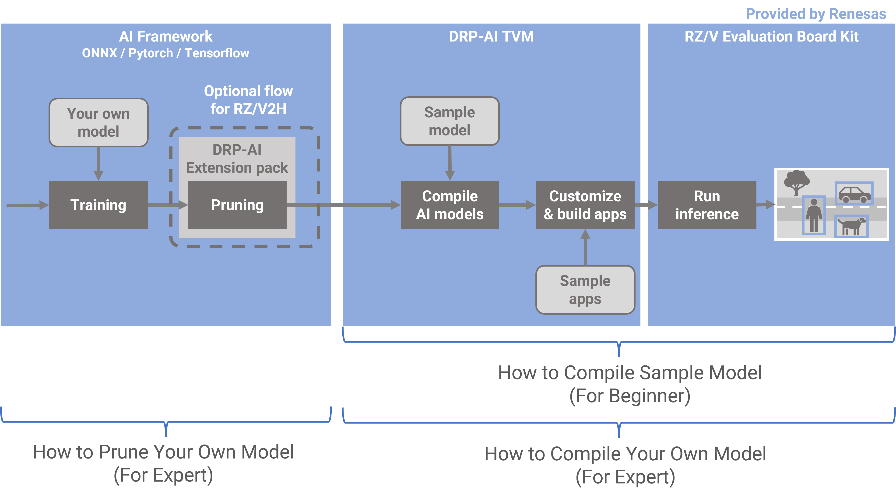

There are 3 tutorials about AI deployment tools for RZ/V2H.
- For easy understanding DRP-AI TVM by using sample model, please follow instructions on this page.
- For understanding how to prune your own model, please click here.
- For understanding how to compile your own model, please click here.
Video
Getting Started (RZ/V2H)
Requirements
Requirements are listed below.
| OS | Ubuntu 20.04 |
| Python | 3.8 |
| Package | git |
| Container Runtime | Docker |
| Evaluation Board | RZ/V2H EVK |
| Related Software Version | ● DRP-AI TVM v2.3 ● DRP-AI Translator i8 v1.01 : DRP-AI_Translator_i8-v1.01-Linux-x86_64-Install or later. ● RZ/V2H AI SDK v3.00 : RTK0EF0180F03000SJ.zip or later. ● DRP-AI Extension Pack (Pruning Tool) v1.00 or later |
Work flow
From this point on, we will follow these steps.
1. Setup Environment
Preparing a workspace
Prepare a workspace for following steps.
$ mkdir tvm_work
$ cd tvm_work1-1. Download the required installers
Download DRP-AI Translator i8 v1.01 from below.
https://www.renesas.com/software-tool/drp-ai-translator-i8
$ cp $HOME/Download/r20ut5460ej0101-drp-ai-translator-i8.zip ./
$ unzip r20ut5460ej0101-drp-ai-translator-i8.zip DRP*Download RZ/V2H AI SDK v3.00 (poky) from below.
https://www.renesas.com/us/en/software-tool/rzv2h-ai-software-development-kit
$ cp $HOME/Download/RTK0EF0180F03000SJ.zip ./
$ unzip RTK0EF0180F03000SJ.zip */poky*sh
$ mv ai_sdk_setup/* .1-2. Download a dockerfile
Download a Dockerfile from repository.
$ wget https://raw.githubusercontent.com/renesas-rz/rzv_drp-ai_tvm/main/DockerfileV2H1-3. Build the docker image
Build the docker image which is downloaded in the previous step.
$ sudo docker build -t drp-ai_tvm_v2h_image --build-arg SDK="/opt/poky/3.1.26" --build-arg PRODUCT="V2H" -f DockerfileV2H .1-4. Create and run a new container from the docker image
Create a container from the docker image built in the previous step.
You can enter the created container by executing the following command.
$ sudo docker run -it --name drp-ai_tvm_v2h_container -v $(pwd)/data:/drp-ai_tvm/data drp-ai_tvm_v2h_image2. Compile AI models
All subsequent operations will be performed within the container you have created in Chapter1.
2-1. Download a onnx model
In this case, RESNET50 is used as an example.
First, download the ONNX model file from the following URL with the following command.
root@docker_hostname:# cd $TVM_ROOT/tutorials/
root@docker_hostname:# wget https://github.com/onnx/models/raw/main/validated/vision/classification/resnet/model/resnet50-v1-7.onnx2-2. Compile a onnx model
Compile the ONNX format model you have just downloaded with the sample script already prepared.
root@docker_hostname:# python3 compile_onnx_model_quant.py ./resnet50-v1-7.onnx -o resnet50_v1_onnx -t $SDK -d $TRANSLATOR -c $QUANTIZER --images $TRANSLATOR/../GettingStarted/tutorials/calibrate_sample/ -v 100 Confirming the output
root@docker_hostname:# ls resnet50_v1_onnx
deploy.json deploy.params deploy.so input_0.bin interpreter_out preprocess3. Customize & build apps
3-1. Preparing build environment
Prepare an environment for building.
$ cd $TVM_ROOT/apps
$ mkdir build
$ cd build$ cmake -DCMAKE_TOOLCHAIN_FILE=./toolchain/runtime.cmake -DV2H=ON ..3-2. Build a sample application
Next, build an application to run the compiled model.
$ make -j$(nproc)Confirming the build artifact tutorial_app.
$ ls
CMakeCache.txt CMakeFiles Makefile cmake_install.cmake tutorial_app3-3. Preparing the necessary files to run on the board
Prepare the necessary files to run on the board.
$ cd $TVM_ROOT/../
$ mkdir tvm$ cp $TVM_ROOT/obj/build_runtime/$PRODUCT/libtvm_runtime.so tvm/
$ cp $TVM_ROOT/apps/exe/sample.bmp tvm/
$ cp $TVM_ROOT/apps/exe/ImageNetLabels.txt tvm/
$ cp $TVM_ROOT/apps/exe/synset_words_imagenet.txt tvm/
$ cp $TVM_ROOT/apps/build/tutorial_app* tvm/
$ cp -r $TVM_ROOT/tutorials/resnet50_v1_onnx tvm/
$ tar acvf tvm.tar.gz tvm/Confirming the tvm.tar.gz
$ ls
tvm tvm.tar.gz4. Run inference
4-1. Setup the target board
Please refer to the following pages to set up your board.
First, follow the step on this page.
Next, follow only step11 for ip address setting on this page.

4-2. Copy to the board
Copy the files you have just prepared to the board.
$ cp ./tvm.tar.gz $TVM_ROOT/dataExit from container using this command ctrl + p q.
$ scp ./data/tvm.tar.gz root@192.168.1.11:/home/root - Board-side operation -
From here, the board is operated.
Operate the board directly or connect to the board for operation.
3-6. Unzip the files
Unzip the files copied to the board.
root@rzv2h-evk...:# cd /home/root/
root@rzv2h-evk...:# tar xvfz tvm.tar.gz
root@rzv2h-evk...:# cd ./tvm3-7. Run the application
Execute the following command to start the application.
root@rzv2h-evk...:# export LD_LIBRARY_PATH=.
root@rzv2h-evk...:# cp -r resnet50_v1_onnx resnet18_onnx
root@rzv2h-evk...:# ./tutorial_appThe application runs the ResNet inference on sample.bmp.
Following is the expected output for ResNet50 ONNX model compiled for DRP-AI on RZ/V2H Evaluation Board Kit.
[11:40:41] /drp-ai_tvm/apps/MeraDrpRuntimeWrapper.cpp:73: Loading json data...
[11:40:41] /drp-ai_tvm/apps/MeraDrpRuntimeWrapper.cpp:91: Loading runtime module...
[11:40:42] /drp-ai_tvm/apps/MeraDrpRuntimeWrapper.cpp:96: Loading parameters...
[TIME] PreRuntime DRP-AI processing time : 1.11 msec
[TIME] GetResult() Processing Time : 0.65 msec
[TIME] Pre Processing Time: 2.38 msec.
[11:40:42] /drp-ai_tvm/apps/MeraDrpRuntimeWrapper.cpp:112: Loading input...
Running tvm runtime
[TIME] AI Processing Time: 4.35 msec.
Output data type : FP16.
Result -----------------------
Top 1 [ 60.6%] : [beagle]
Top 2 [ 19.4%] : [English foxhound]
Top 3 [ 15.1%] : [Walker hound, Walker foxhound]
Top 4 [ 2.0%] : [basset, basset hound]
Top 5 [ 0.8%] : [bluetick]Here is the end of the workflow.
Appendix
Detailed about the files to required to run on the board.
| Name | Path | Details |
|---|---|---|
| Runtime Library | drp-ai_tvm/obj/build_runtime/${PRODUCT}/libtvm_runtime.so |
Binary provided under obj directory. You should use the libtvm_runtime.so in the directory with the corresponding product name. |
| Model Data | drp-ai_tvm/tutorials/resnet* |
Model compiled in the Compile AI models. DRP-AI Preprocessing Runtime Object files, (preprocess directory) are also included. |
| Input Data | drp-ai_tvm/apps/exe/sample.bmp |
Windows Bitmap file, which is input data for image classification. |
| Label List | drp-ai_tvm/apps/exe/synset_words_imagenet.txtdrp-ai_tvm/apps/exe/ImageNetLabels.txt |
synset_words_imagenet.txt:Label list for ResNet18 post-processing.ImageNetLabels.txt:Label list for ResNet50 post-processing when compiling Tensorflow Hub model. |
| Application | drp-ai_tvm/apps/build/tutorial_app |
Compiled in this page. |